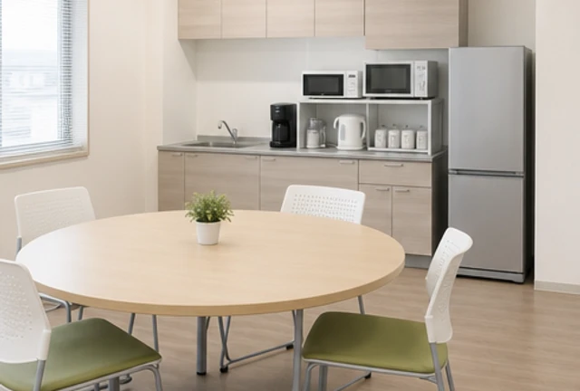
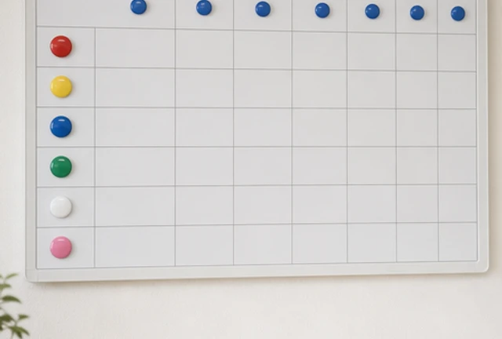
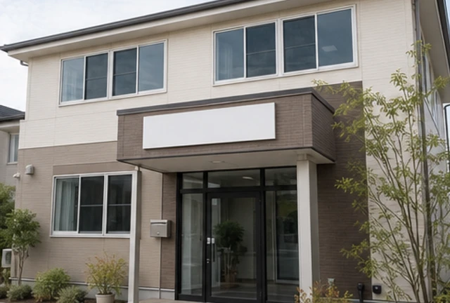

働きかたと制度
2026年度の内容です。正社員を基準にしています（パート・アルバイトは勤務日数などに応じて適用）。


休みと働きかた
年間休日120日
4週8休に加えて、夏季休暇3日と年末年始休暇5日。こども支援事業部は日曜と祝日が基本の休みです。
シフトの希望は先に出す
翌月の休みの希望は、前月10日までにアプリで提出。希望を集めてからシフトを組みます。
有給休暇＋入社日からの特別休暇
年次有給休暇は法律どおり入社6か月後に付与。それまでの期間にも使える特別休暇を、入社日に3日つけています。
時間単位の有給休暇
年5日分までは1時間単位で取れます。通院や学校の面談に合わせて使う職員が多い制度です。
子育て中の短時間勤務
お子さんが小学校を卒業するまで、1日6時間からの短時間勤務を選べます。
夜勤なし
夜勤のある事業所はありません。訪問介護の最終訪問も19:00までです。
お金と暮らしの支え
社会保険完備
健康保険・厚生年金保険・雇用保険・労災保険に加入します。
処遇改善手当
国の処遇改善の加算をもとにした手当を、毎月の給与に含めて支給します。
賞与年2回・昇給年1回
賞与は7月と12月。昇給は評価の結果をもとに4月に行います。
資格取得の費用負担
介護職員初任者研修・実務者研修・介護福祉士・介護支援専門員などの受講料と受験料を会社が負担します。
移住サポート
県外から入社する方には、引越し費用を上限10万円まで補助します。
そのほか
通勤手当（月2万円まで）、退職金制度（勤続3年以上）、制服貸与、年1回の健康診断。
キャリアの道すじ
現場を続けながら役割を広げる道と、専門職として深める道。
どちらに進むかは、毎年の面談で一緒に考えます。
- 1〜2年目
スタッフ
先輩と組んで、支援や介護の基本を身につけます。入社後3か月は、毎週15分の振り返りの時間があります。
- 3年目〜
リーダー
4〜8名のチームをまとめ、活動の企画や新人の指導を担当します。20代で任される人も増えています。
- 5年目〜
管理者
事業所の運営と、職員の働き方づくりの責任者です。月に一度、全事業所の管理者会に出ます。
- 8年目〜
エリアマネージャー
3〜5の事業所を受け持ち、新しい事業所の立ち上げにも関わります。
専門職として深める道
- 児童発達支援管理責任者こども支援事業部
- サービス管理責任者就労支援事業部
- サービス提供責任者・介護支援専門員在宅ケア事業部
いずれも、定められた実務経験と研修の修了が必要です。要件を満たした職員には、研修の受講を業務として扱い、費用は会社が負担します。事業部をまたいだ異動も、本人の希望をもとに年1回受け付けています。
評価のしくみ
評価は、給与を決めるためだけのものではありません。
次の半年に何をやってみるかを、上長と決める時間です。
- 毎月上長との1on1（30分）。困りごととやってみたいことを話します
- 4月・10月半年の目標を自分で立て、上長とすり合わせます
- 9月・3月自己評価と上長の評価を見比べて、ちがうところを話し合います
- 4月1年分の評価をもとに昇給と役割を決めます
見ているのは、3つのこと
支援・ケアの質
記録や家族・関係機関とのやりとりも含めて、相手の声を聞いた支援ができているか。
チームへの関わり
気づいたことを共有したか。後輩や同僚の困りごとに手を貸したか。
試したこと
新しい活動や改善を、ひとつでも試したか。うまくいったかどうかは問いません。
拠点とオフィス
熊本市を中心に、合志市・菊陽町まで16の事業所があります。
応募のときに、通いやすい事業所を希望として伝えてください。

本社・コーポレート本部
ソエノワビル 3F
〒862-0949 熊本県熊本市中央区国府本町4-18
TEL 096-355-8140 FAX 096-355-8141
本社の2Fは研修室です。新人研修や事業部合同の勉強会に使っています。
こども支援事業部7事業所
- ソエノワキッズ 大江熊本市中央区
- ソエノワキッズ 帯山熊本市中央区
- ソエノワキッズ 健軍熊本市東区
- ソエノワキッズ 長嶺熊本市東区
- ソエノワキッズ 田崎熊本市西区
- ソエノワキッズ 植木熊本市北区
- ソエノワキッズ 合志合志市
どの事業所も児童発達支援と放課後等デイサービスの多機能型
就労支援事業部4事業所
- ソエノワワークス 健軍熊本市東区
- ソエノワワークス 清水熊本市北区
- ソエノワワークス 南熊本熊本市中央区
- ソエノワワークス 水道町熊本市中央区
水道町は就労移行支援、ほかの3か所は就労継続支援B型
在宅ケア事業部5事業所
- ソエノワホームケア 植木熊本市北区
- ソエノワホームケア 九品寺熊本市中央区
- ソエノワホームケア 御幸笛田熊本市南区
- ソエノワホームケア 菊陽菊陽町
- ソエノワケアプラン 国府熊本市中央区
ケアプラン 国府は居宅介護支援、ほかの4か所は訪問介護